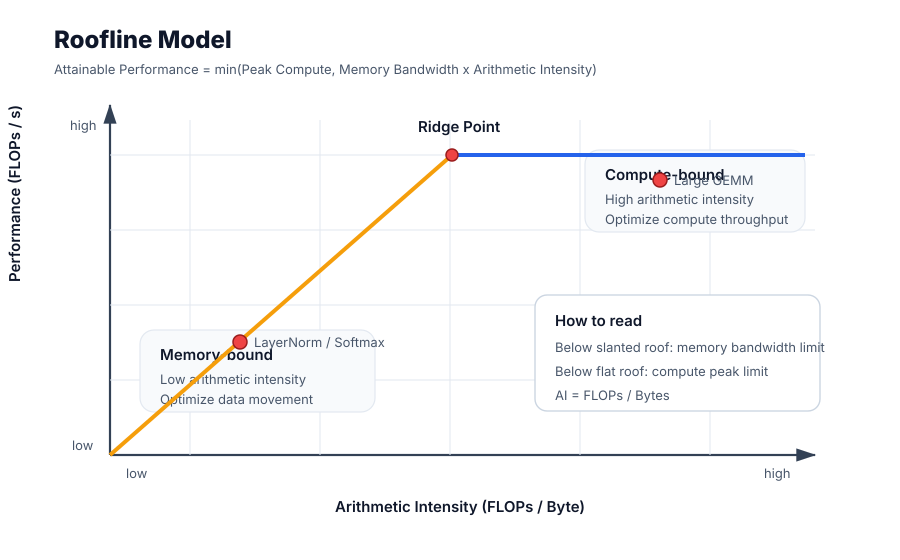
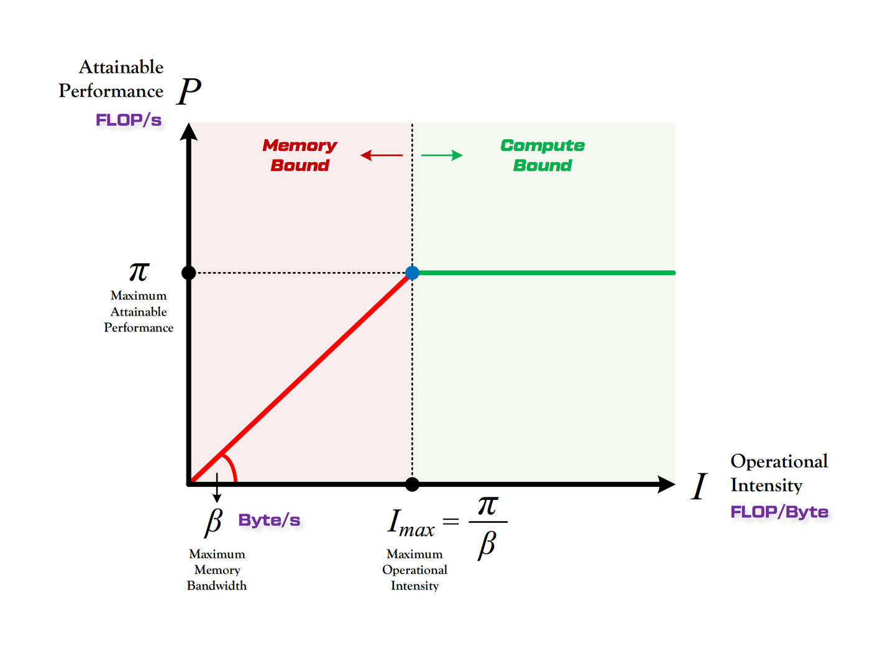
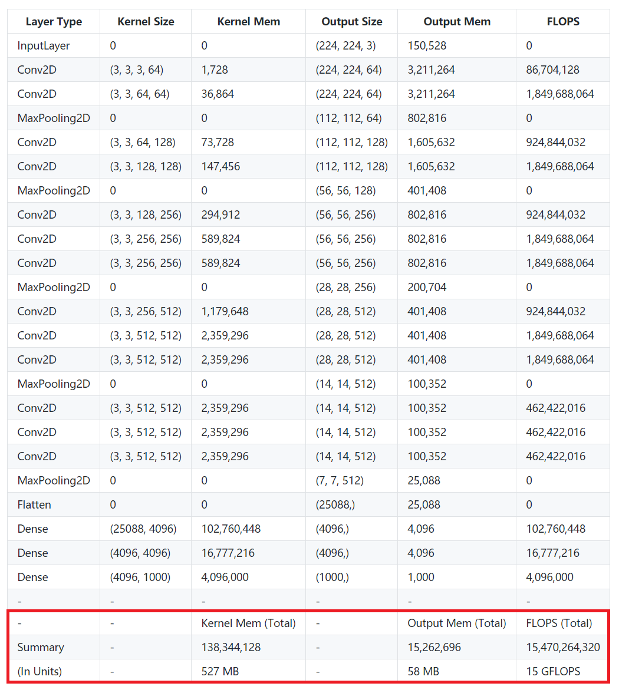
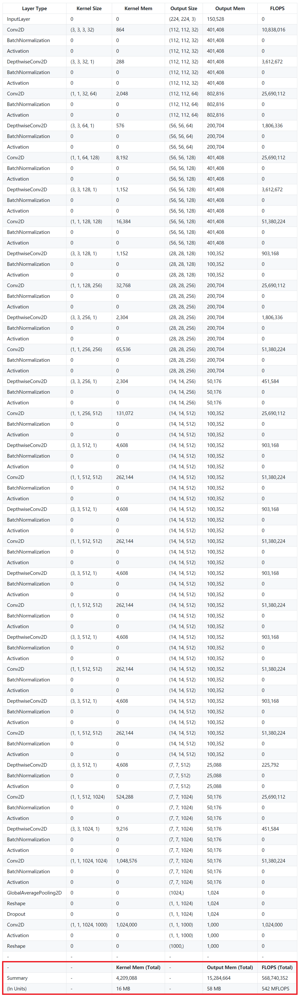
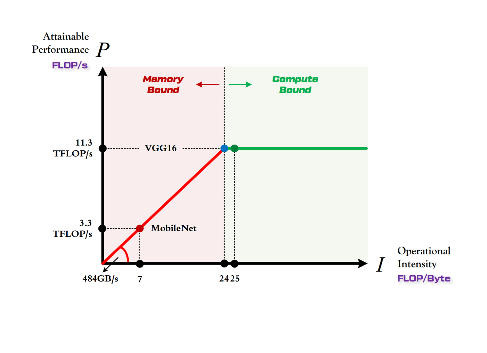

方法与模型
| 维度 | 推理场景 | 训练场景 |
|---|---|---|
| 预测目标 | 输出 token 长度 | 作业执行时间 |
| 模型 | LightGBM（两阶段） | Random Forest |
| 特征来源 | 结构化（角色、位置）+ 语义（MiniLM → PCA） | 硬件计数器 + 历史统计 |
| 精度 | 分类 AUC 0.96，回归 R² 0.78 | MAPE ~30%, R² 0.73 |
| 推理延迟 | ~10ms | < 1ms |
| 冷启动 | per-role → 全局 fallback | ≥ 50 历史样本后有效 |
| 更新策略 | post-execution profiling + EWMA | 周期性再训练 + EMA 平滑 |
树模型 vs 深度学习的选择依据
| 考虑因素 | 树模型（LightGBM/RF） | 深度学习 |
|---|---|---|
| 训练数据量 | 几百到几千条就足够 | 需要大量数据 |
| 推理延迟 | 微秒到毫秒级 | 毫秒到百毫秒 |
| 可解释性 | 特征重要性、决策路径清晰 | 黑盒 |
| 表格数据 | 通常优于 DNN | 需要特殊架构（TabNet） |
| 特征工程 | 需要手工设计 | 自动学习表示 |
调度系统中的具体考量：
- 推理场景：per-role 可能只有几百条训练数据；推理延迟必须 < 15ms（在调度路径上）；需要特征重要性分析证明哪些特征有用
- 训练场景：推理 < 1ms 才能不影响调度延迟（总预算 50ms）；硬件计数器是结构化特征，树模型天然擅长
① 计算平台的两个指标：算力 π 与带宽 β
| 指标 | 含义 | 单位 | 面试回答 |
|---|---|---|---|
| 算力 π | 计算平台每秒能做的浮点运算数（性能上限） | FLOP/s | "屋顶的高度" |
| 带宽 β | 计算平台每秒能完成的内存交换量（带宽上限） | Byte/s | "房檐的斜率" |
| 计算强度上限 Imax | π / β，单位内存交换最多能撑多少次计算 | FLOPs/Byte | "屋顶和房檐的交点" |
注意：这里"内存"是广义的——CPU 平台上是主存，GPU 平台上是显存（HBM）。π / β 都是峰值，不是平均。
② 模型的两个指标：计算量与访存量
| 指标 | 含义 | 单位 | 对应复杂度 |
|---|---|---|---|
| 计算量 FLOPs | 单次前向传播的浮点运算总数 | FLOPs | 时间复杂度 |
| 访存量 Bytes | 单次前向传播的内存交换总量（理想情况下 = 权重内存 + 特征图内存） | Byte | 空间复杂度 |
| 计算强度 I | 计算量 ÷ 访存量，每搬 1 Byte 数据能做多少次浮点运算 | FLOPs/Byte | 数据复用率 |
| 理论性能 P | 模型在该平台上的每秒浮点运算次数（Roofline 的输出） | FLOP/s | 性能上界 |
卷积层的两个常用公式（M = 输出特征图边长，K = 卷积核边长，C 为通道数）：
访存量乘 4 是因为 float32 占 4 字节。I = 计算量 / 访存量，I 越大说明数据复用率越高，越不容易卡在内存上。
③ Roofline Model：把两组指标拼起来

Roofline 标准示意：横轴是算术强度，纵轴是实际性能；斜线是 memory roof，水平线是 compute roof，交点是 ridge point。

Roofline 形态：算力决定"屋顶"高度（绿色水平线），带宽决定"房檐"斜率（红色斜线），交点 = Imax。
Roofline 解决的核心问题：计算量为 A、访存量为 B 的模型，在算力为 C、带宽为 D 的平台上，理论性能上界是多少？用一个分段函数表达：
| 区域 | 判定 | 瓶颈在哪 | 优化方向 |
|---|---|---|---|
| Compute-Bound（屋顶） | I ≥ Imax | 算力 π 限死了 P | 低精度（FP16/INT8）、TensorCore、提高 SM 利用率；这种状态其实是好的，说明算力被吃满了 |
| Memory-Bound（房檐） | I < Imax | 带宽 β 限死了 P | kernel fusion 减少访存、量化压缩权重、提高 batch 提高数据复用、用 cache/SRAM |
怎么读 Roofline 图
| 图上元素 | 含义 | 面试解释 |
|---|---|---|
| X 轴：Arithmetic Intensity | FLOPs / Byte | 每搬 1 Byte 数据能做多少计算，越高说明数据复用越好 |
| Y 轴：Performance | FLOPs/s | 实际达到的计算吞吐 |
| Memory Roof | Bandwidth × Arithmetic Intensity | 斜线区域说明性能被内存带宽限制 |
| Compute Roof | Peak FLOPs/s | 水平线区域说明性能被计算峰值限制 |
| Ridge Point | Peak FLOPs/s ÷ Peak Bandwidth | 低于它偏 memory-bound，高于它才可能 compute-bound |
Roofline 不是告诉你真实耗时一定是多少，而是告诉你理论上限在哪里，以及优化应该朝哪个方向走。
一个数字例子
假设 GPU 峰值算力是 100 TFLOPS，显存带宽是 2 TB/s，那么 ridge point = 50 FLOPs/Byte。
| Kernel | 算术强度 | 带宽屋顶 | 最终上限 | 判断 |
|---|---|---|---|---|
| A | 5 FLOPs/Byte | 10 TFLOPS | min(100, 10)=10 | memory-bound |
| B | 100 FLOPs/Byte | 200 TFLOPS | min(100, 200)=100 | compute-bound |
④ 实例分析：VGG16 vs MobileNet 在 1080Ti 上
VGG16

VGG16 各层 Kernel Mem、Output Mem 与 FLOPs。
- 计算量 ≈ 15 GFLOPs（前向）
- 访存量 ≈ 600 MB（Kernel Mem + Output Mem，乘 4）
- 计算强度 IV ≈ 25 FLOPs/Byte
VGG 是计算强度登峰造极的模型，简约不简单。如果把顶端两个全连接层（占 80% 参数）换成 GAP，计算强度还能再翻 4 倍以上。
MobileNet

MobileNet 用 DW + PW 大幅压低 FLOPs，但同时也付出了"细长、计算效率低"的代价。
- 计算量 ≈ 0.5 GFLOPs（VGG16 的 1/30）
- 访存量 ≈ 74 MB（VGG16 的 1/8）
- 计算强度 IM ≈ 7 FLOPs/Byte
FLOPs 降得比访存量更快，所以 I 反而下降了——这就是 DW + PW 这种"轻量化"算子的代价。
放进 1080Ti 的 Roofline
| 项 | 数值 |
|---|---|
| 1080Ti 算力 π | 11.3 TFLOP/s |
| 1080Ti 带宽 β | 484 GB/s |
| 1080Ti 计算强度上限 Imax | ≈ 24 FLOPs/Byte |
| VGG16 的 IV | ≈ 25 → 刚好越过 Imax，Compute-Bound |
| MobileNet 的 IM | ≈ 7 → 远低于 Imax，Memory-Bound |

VGG16 落在屋顶上（吃满算力），MobileNet 落在房檐上（被带宽卡住）。
⑤ 工程含义：什么模型该跑在什么平台
| 场景 | 平台特征 | 合适的模型 | 原因 |
|---|---|---|---|
| 大卡训练（A100/H100/1080Ti） | π 高、β 高，Imax 通常 10-100 | VGG / 大型 Transformer | 计算强度高，能站到屋顶；MobileNet 这种放上来反而是浪费带宽 |
| 嵌入式 / 端侧 (TPU Edge / 手机 NPU) | π 低、β 也低，Imax 通常 < 5 | MobileNet / 量化小模型 | IM = 7 在端侧已经能站到屋顶，反而能吃满算力，准确率只下降 1% |
| 大模型推理 decode 阶段 | 每 step 只生成 1 token，访存大但计算少 | — | 天然 Memory-Bound；优化方向是 KV cache 压缩、PagedAttention、batching |
"屠龙时用屠龙刀，日常吃鸡用小刀"——选模型不能只看 FLOPs，要看模型的 I 和目标平台的 Imax 是否匹配。
⑥ 常见误区
不是。Roofline 给的是理论上界。实际性能还受 cache 大小、GEMM 实现质量、kernel launch 开销、调度策略、PCIe 拷贝、CPU 预处理等很多因素影响，所以实测往往低于 Roofline 上限——但永远不可能高于它。
不是。Imax = π / β 是平台的属性，和模型无关。模型的属性是它自己的计算强度 I。判断 Compute-Bound / Memory-Bound 就是比较"模型的 I"和"平台的 Imax"。
不一定。MobileNet 的 FLOPs 只有 VGG 的 1/30，在 1080Ti 上的实际理论性能是 3.3 TFLOP/s（卡在带宽上），而 VGG 是 11.3 TFLOP/s（吃满算力）。MobileNet 速度的真实优势只有约 10 倍，而不是 30 倍。FLOPs 不能直接外推为耗时。
不一样。训练除了前向传播，还要算反向传播（FLOPs 翻倍，访存量也涨）和梯度更新（Momentum、Adam 这些优化器还要存额外状态，访存量再涨），所以训练的 I 通常比推理小，更容易 Memory-Bound。
适用，但要分阶段看。Prefill 是大矩阵乘，I 很高，通常 Compute-Bound；Decode 每次只算 1 个 token，但要把整个 KV cache 读一遍，I 极低，通常 Memory-Bound。这就是为什么 LLM 推理的关键优化都集中在"怎么少搬 KV cache"——PagedAttention、量化、MQA/GQA 都是这个思路。